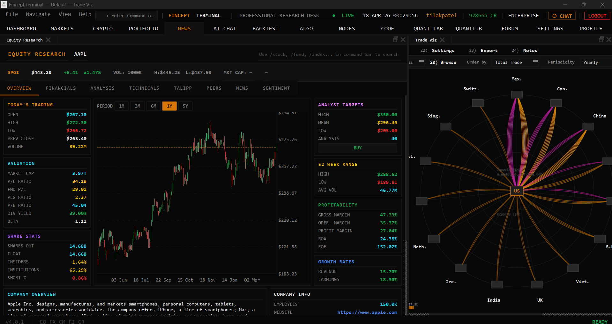

FinceptTerminal
- 一个 C++20 / Qt6 原生金融终端，试图把 行情、研究、组合、新闻、Python 金融分析、AI agents 和 DataHub 放进桌面工作台。
- 它更像开源金融工作站，而不是单一金融库。
新用户先看什么
保留精益创业视角：适合谁、问题、差异、时机和最小验证。
适合谁
- 个人投资者、金融工程学习者、开源量化开发者。
- 想低成本探索行情、研究、组合与 Python 分析整合的小团队。
- 希望理解金融终端架构、DataHub 数据分发和桌面工作台组织方式的技术人员。
解决什么问题
- Bloomberg/Eikon 昂贵；开源金融工具往往散落在行情、分析、新闻、交易等不同工具里。
- 用户真正需要的是一个能串起研究流程的工作台，而不只是 API 列表。
和别的方案哪里不同
- 核心差异是 Qt 原生桌面 UI + DataHub topic contract + Python 金融脚本生态 的组合。
- 如果 DataHub 治理得住复杂数据源，它有机会从功能集合变成可扩展终端平台。
为什么现在值得看
- 开源金融数据、Python 分析和本地 AI agent 都在成熟，桌面集成工作台有现实试用价值。
- 仓库已有多张产品截图、DataHub 架构文档和大量 C++/Python 资产，足以做场景级静态评估。
最小验证方式
- 先围绕 Equity Research 页面验证一个标的研究路径，例如 AAPL。
- 确认 installer/构建、行情数据、Python analytics、DataHub topic 更新和缓存行为。
- 真实账户、交易、机构数据源必须延后到许可证和安全审计之后。
Gold Example / Demo
优先使用真实项目图片或仓库 example；未运行时明确标注静态推演。

AAPL 研究工作流
仓库 README 产品图 + 静态推演
- 打开 Equity Research 或 Markets 页面，输入 AAPL。
- Qt Screen 发出标的请求，DataHub 订阅
market:quote:AAPL等 topic。 - Producer 拉取行情、新闻或财务数据，缓存后发布给页面。
- 研究员在同一工作台查看行情、新闻、财务、组合影响。
项目机制图
图表是可选组件；只在 UML / 系统动力学等表达方式能带来解释增益时使用。
选择理由：这是桌面金融工作台，核心要解释 UI、DataHub、Producer、缓存和研究视图如何协作；数据/研究上下文积累更适合用 SFD 表达。
场景：研究员在 Equity Research 中查看 AAPL，并希望把行情、新闻、财务和组合影响放到同一上下文。
参考 docs/reference/image.md 的思路：中心是一次任务执行，外圈只保留有解释增益的动力回路。
先看任务执行步骤，再看哪些反馈回路会改变长期采用、风险或上下文存量。
选择 AAPL / 打开研究页
形成研究任务订阅 quote/news/financials
页面不直接管理所有数据源请求行情、新闻、财务数据
多来源数据进入统一 topic写入缓存和状态
减少重复请求并保留上下文发布更新
图表、表格、新闻和组合影响同步刷新行情/新闻/财务流入 -> DataHub topic 聚合 -> 缓存与本地状态增加 -> 研究页可复用上下文变多
功能覆盖扩大 -> 许可证/数据源/交易风险上升 -> 审计和权限边界补齐 -> 可采用范围恢复可控
主流程图把一次典型任务拆成角色、协议/数据转换和关键交接点。
选择 AAPL / 打开研究页
形成研究任务订阅 quote/news/financials
页面不直接管理所有数据源请求行情、新闻、财务数据
多来源数据进入统一 topic写入缓存和状态
减少重复请求并保留上下文发布更新
图表、表格、新闻和组合影响同步刷新组件图强调核心契约：哪个模块承接输入，哪些模块围绕它提供数据、适配或规则。
承载用户交互和金融场景页面。
用 topic 统一 quote、news、economics、broker 等状态。
HTTP、WebSocket、Broker、PythonRunner 等生产数据。
承接历史数据、状态和本地上下文。
提供分析、数据获取、agent 和量化能力。
系统动力学图只在反馈、存量或趋势能解释项目机制时使用。
行情/新闻/财务流入 -> DataHub topic 聚合 -> 缓存与本地状态增加 -> 研究页可复用上下文变多
功能覆盖扩大 -> 许可证/数据源/交易风险上升 -> 审计和权限边界补齐 -> 可采用范围恢复可控
%% 主流程 / sequence
sequenceDiagram
autonumber
participant P1 as 研究员
participant P2 as Qt Screen
participant P3 as DataHub Topic
participant P4 as Producer/Data Source
participant P5 as Cache/State
participant P6 as 研究视图
P1->>P2: 选择 AAPL / 打开研究页
Note over P2: 形成研究任务
P2->>P3: 订阅 quote/news/financials
Note over P3: 页面不直接管理所有数据源
P3->>P4: 请求行情、新闻、财务数据
Note over P4: 多来源数据进入统一 topic
P4->>P5: 写入缓存和状态
Note over P5: 减少重复请求并保留上下文
P5->>P6: 发布更新
Note over P6: 图表、表格、新闻和组合影响同步刷新
---
%% 组件关系 / component
flowchart LR
N1[Qt Screens<br/>承载用户交互和金融场景页面。]
N2[DataHub<br/>用 topic 统一 quote、news、economics、broker 等状态。]
N1 --> N2
N3[Producers<br/>HTTP、WebSocket、Broker、PythonRunner 等生产数据。]
N2 --> N3
N4[Cache / SQLite<br/>承接历史数据、状态和本地上下文。]
N3 --> N4
N5[Python Scripts<br/>提供分析、数据获取、agent 和量化能力。]
N4 --> N5
---
%% 系统动力学 / CLD-SFD-BOT
SFD 研究上下文存量: 行情/新闻/财务流入 -> DataHub topic 聚合 -> 缓存与本地状态增加 -> 研究页可复用上下文变多
B 机构采用控制回路: 功能覆盖扩大 -> 许可证/数据源/交易风险上升 -> 审计和权限边界补齐 -> 可采用范围恢复可控
---
%% 混合图说明
中心使用一次任务/请求执行骨架；外圈只叠加有解释增益的 CLD/SFD/BOT 回路。自适应架构视角
先判断复杂度，再裁剪 C4 / 4+1 / UML 组合；核心业务交互图必须优先。
自适应架构视角
1. 系统全貌
以 AAPL Equity Research 作为 Scenario，先界定研究员、桌面终端和外部数据源的系统边界。
系统全貌图突出研究场景边界：UI 通过 DataHub 组织外部数据、Python 分析和本地状态。
结构依赖 / 数据流向
结构依赖 / 数据流向
结构依赖 / 数据流向
结构依赖 / 数据流向
结构依赖 / 数据流向
结构依赖 / 数据流向
结构依赖 / 数据流向
Mermaid 源码
flowchart LR
Researcher[Researcher] --> Qt[FinceptTerminal Qt Desktop]
Qt --> DataHub[DataHub Topic Bus]
DataHub --> Producers[Market News Financial Producers]
Producers --> Sources[External Data Sources]
DataHub --> Python[Python Analytics Runtime]
DataHub --> Cache[Local Cache and State]
Qt --> Views[Research Views]2. 核心业务流转
场景描述：研究员在 Equity Research 中查看 AAPL，并希望把行情、新闻、财务和组合影响放到同一上下文。
这是必须优先理解的交互图：Screen 不直接管理所有来源，而是通过 DataHub topic 组织数据流和状态刷新。
上图由架构视角的 Mermaid sequenceDiagram 源码静态渲染，源码保留在下方。
Open Equity Research and choose AAPL
subscribe quote/news/financials topics
request market, news, financial data
write fetched data and status
publish state update
refresh charts, tables, news and portfolio impact
Mermaid 源码
sequenceDiagram
autonumber
actor U as Researcher
participant S as Qt Screen
participant H as DataHub Topic
participant P as Producer / Data Source
participant C as Cache / State
participant V as Research View
U->>S: Open Equity Research and choose AAPL
S->>H: subscribe quote/news/financials topics
H->>P: request market, news, financial data
P->>C: write fetched data and status
C-->>H: publish state update
H-->>V: refresh charts, tables, news and portfolio impact3. 静态组织结构
静态组织结构只展示开发边界：UI 场景、应用装配、DataHub、Producer、缓存和 Python 脚本生态。
静态组织图用分层边界表达 C++/Qt、DataHub、缓存和 Python 运行时的职责。
结构依赖 / 数据流向
结构依赖 / 数据流向
结构依赖 / 数据流向
结构依赖 / 数据流向
结构依赖 / 数据流向
Mermaid 源码
flowchart TB
subgraph Desktop[Qt Desktop Application]
Screens[src/screens UI Scenes]
App[src/app main startup]
Services[Services and Producers]
DataHub[DataHub Topic Contract]
Cache[SQLite / Local Cache]
end
Scripts[fincept-qt/scripts Python Analytics]
Screens --> DataHub
App --> Services
Services --> DataHub
DataHub --> Cache
DataHub --> Scripts4. 物理 / 部署视图
机构采用前真正要确认的是运行节点、外部依赖、数据授权和真实账户边界，而不是把 README 截图当作可部署证明。
部署视图强调机构采用前必须确认的本地运行、外部数据、broker 和真实账户边界。
结构依赖 / 数据流向
结构依赖 / 数据流向
结构依赖 / 数据流向
结构依赖 / 数据流向
optional
结构依赖 / 数据流向
Mermaid 源码
flowchart TB
subgraph Workstation[User Workstation]
App[FinceptTerminal Qt App]
LocalStore[Local Cache / Profile]
Py[Python Runtime]
end
App --> LocalStore
App --> Py
App --> Market[Market Data APIs]
App --> News[News / Financial APIs]
App -.optional.-> Broker[Broker Connection]
Broker --> Account[Real Account Boundary]核心资产与价值
只保留新用户和技术评估者需要理解的关键资产。
DataHub topic contract
把 markets、news、economics、broker、agents 的数据状态统一到可订阅层。
原生终端框架
src/app/main.cpp 初始化 profile、crash、metatypes、DataHub producers 和服务。
Python 金融脚本
fincept-qt/scripts/ 覆盖分析、agents、数据获取和量化模块。
桌面 UI 资产
src/screens/ 下的金融场景页面形成 Bloomberg-like 工作台体验。
采用前确认与证据边界
风险和工程化信息只保留会影响试用/采用决策的部分。
采用前确认
- 学习和研究用途可先试用产品图对应的核心场景。
- 机构采用前必须确认 AGPL/商业许可、构建复现、数据源授权和交易安全。
- 不要先接真实账户；先验证 installer、market data、Python analytics 和 DataHub 行为。
DeepWiki / 证据边界
- DeepWiki 将其拆到 data connectors 等专题，说明复杂度主要集中在数据源与终端集成。
- 本轮 DeepWiki 只作辅助理解；关键判断仍以 README、架构文档、DataHub 文档和源码入口为准。
- README 本地图片包含 EquityResearch、Portfolio、News、NodeEditor 等产品截图。
docs/ARCHITECTURE.md与fincept-qt/DATAHUB_ARCHITECTURE.md支撑 Screen/Service/DataHub 判断。- 未构建 Qt、未运行 installer、未连接真实数据源或 broker。